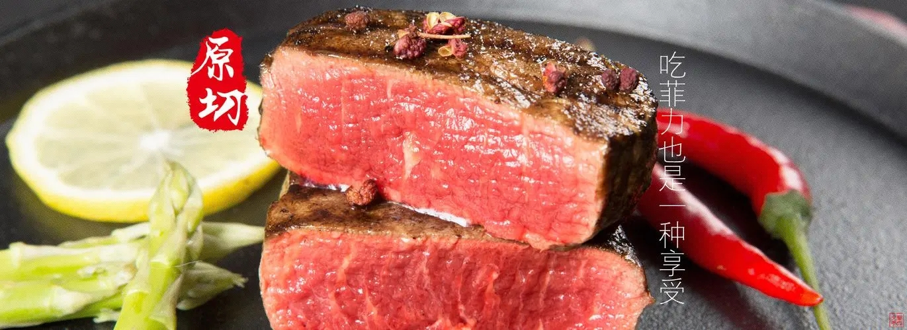
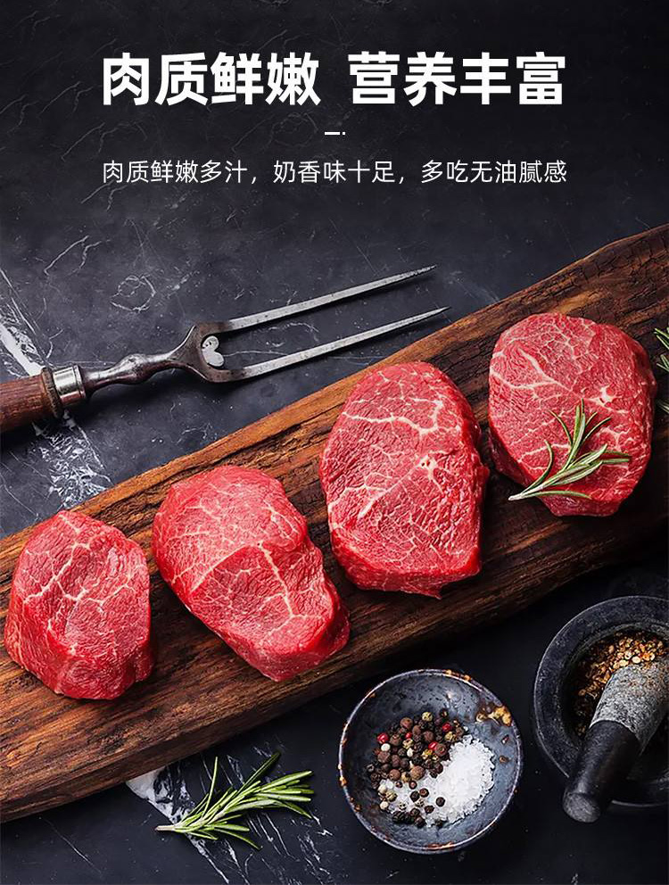

做法一
食材准备
美国菲力牛排一块160公克、红蕃茄碎（罐装）2粒、九层塔（切碎）2-3支、大蒜（切末）2粒、橄榄油1大匙
制作步骤
1、先将菲力牛排煎至喜爱的生熟度后置放于主菜盘内；
2、取出少许橄榄油炒洋葱末和磨菇片，待磨菇软化后，倒进少许白葡萄酒；
3、酒精成份蒸发后加进鲜奶油；
4、浓缩成半稠程度，并适当的调味成汁，淋于牛排上即可食用。
做法二
食材准备
原料：菲力牛排；配料：食用油、黄油、大蒜、洋葱；
制作步骤
1、平底锅，倒入调和油，加点黄油，油加热后加入大蒜片。
2、加入腌制过的菲力牛排
3、加入洋葱
4、煎至六七成熟，加入牛排酱汁，装盘。
